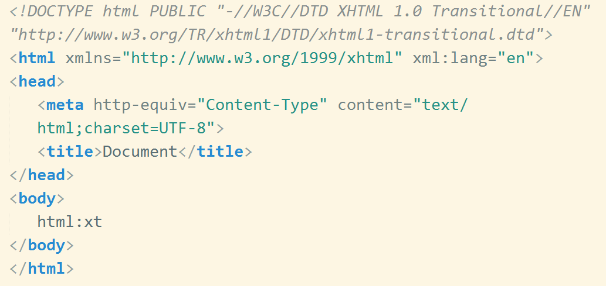
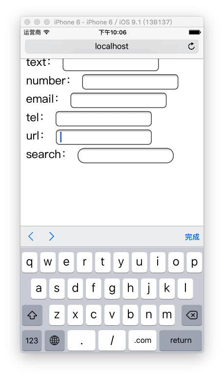
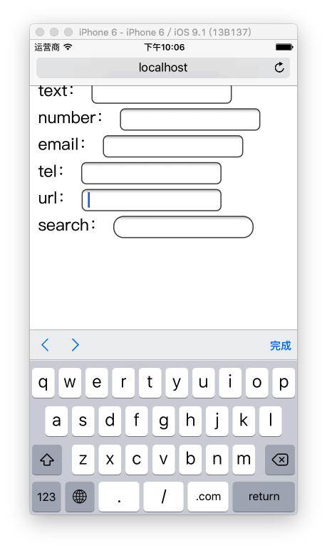

HTML5
讲师：郑维
概述
HTML5 ?
Web Development to the next level
Web 技术发展时间线
- 1991 HTML
- 1994 HTML2
- 1996 CSS1 + JavaScript
- 1997 HTML4
- 1998 CSS2
- 2000 XHTML1
- 2002 Tableless Web Design
- 2005 AJAX
- 2009 HTML5
- 2014 HTML5 Finalized
SO ~
HTML5是HTML的最新一代版本
HTML5是用来表示更NB一点的文本 ？
NO ！！！
这个仅仅可以理解为H5的狭义概念
What is HTML5
HTML5 ≈ HTML↑ + CSS↑ + JavaScript API↑
广义上：新一代开发Web富客户端应用程序整体解决方案
What is Rich Client
指具有很强交互性和体验的客户端程序
十年之前

just for 内容，没有交互
想要交互、绚丽的效果
Flash
e.g. Moodstream、 Waterlife、 monoface、 etc.
被封杀 and 孤芳自赏
link: 关于H5和Flash
When HTML5

让Web开发重新回归富客户端的时代
HTML5 的应用场景
-
极具表现力的网页
- 案例非常多
-
网页应用程序
- PC端：iCloud、百度脑图、Office 365···
- APP端：淘宝、京东、美团···
- WeChat端：淘宝、京东、美团···
-
混合式本地应用
- PC端：网易云音乐、有道词典···
- APP端：淘宝、京东、美团···
- 简单的游戏
HTML5 到底多了点啥？
我个人将这些变化大体分为三类：
- HTML
- JavaScript
- CSS
HTML
-
标签
- 更语义化标签
- 应用程序标签
- 属性
- 链接关系描述
- 结构数据标记
- ARIA
- 自定义属性
-
智能表单
- 新的表单类型
- 虚拟键盘适配
-
网页多媒体
- 音频
- 视频
-
Canvas
- 2D
- 3D (WebGL)
JavaScript API
-
核心平台提升
- 新的选择器
- Element.classList
- 访问历史API
- 全屏API
-
网页存储
- Application Cache
- localStorage
- sessionStorage
- WebSQL
- IndexedDB
-
设备信息访问
- 网络状态
- 硬件访问
- 设备方向
- 地理围栏
-
拖放操作
- 网页内拖放
- 桌面拖入
- 桌面拖出
-
文件
- 文件系统API
- FileReader
-
网络访问
- XMLHttpRequest
- fetch
- WebSocket
- 多线程
- 桌面通知
CSS
- New Selector
- Web Fonts
- Text Styles
- Opacity
- HSL Color
- Rounded Corners
- Gradients
- Shadows
- Background Enhancements
- Border Image
- Flexible Box Model
- Transforms
- Transitions
- Animations
- etc. 后面详细讨论
干货来了
HTML5语法规范
标签
更具有语义化的标签
就让HTML代码符合内容的结构化，标签语义化
以前我们可能是这样的：

以后我们一定是这样的：

为什么要有语义化标签
能够便于开发者阅读和写出更优雅的代码，代码如诗
同时让浏览器或是网络爬虫可以很好地解析，从而更好分析其中的内容
更好地搜索引擎优化
切记
- HTML的职责是描述一块内容是什么（或其意义）
- 而不是它长的什么样子，它的外观应该由CSS来决定。
语义化标签 学习目标
- 掌握语义化标签的重要性
- 可以正确使用语义化标签
智能表单
新的表单类型
<input type="text" required>
<input type="email" value="some@email.com">
<input type="date" min="2010-08-14" max="2011-08-14" value="2010-08-14">
<input type="range" min="0" max="50" value="10">
<input type="search" results="10" placeholder="Search...">
<input type="tel" placeholder="(555) 555-5555"
pattern="^\(?\d{3}\)?[-\s]\d{3}[-\s]\d{4}.*?$">
<input type="color" placeholder="e.g. #bbbbbb">
<input type="number" step="1" min="-5" max="10" value="0">
虚拟键盘适配
<input type="text" name="txt_text" id="txt_text">
<input type="number" name="txt_number" id="txt_number">
<input type="email" name="txt_email" id="txt_email">
<input type="tel" name="txt_tel" id="txt_tel">
<input type="url" name="txt_url" id="txt_url">


 

新的表单元素
- DataList(数据列表)
- keygen(加密字符串)
- output(数值显示器)
智能表单 学习目标
- 网页开发过程中可以针对需求使用特定的智能表单类型
网页多媒体
在此之前需要依赖于第三方插件（e.g. flash）
音频
<audio controls="controls">
<source src="img/music.mp3" type="audio/mpeg"/>
</audio>
DEMO：
视频
<video controls="controls">
<!-- 不同浏览器支持格式不一样 -->
<source src="fun.ogg" type="video/ogg" />
<source src="fun.mp4" type="video/mp4" />
<!-- 当浏览器不兼容video标签，就会将他以div方式解析 -->
SHIT 你的浏览器不支持！
</video>
DEMO：
属性
兼容方案：
多媒体 学习目标
- 掌握网页多媒体的意义
- 对Video标签和Audio标签熟练使用
JavaScript API
基础API提升
New Selectors
提供类似于jQuery中选择器的API
-
通过类名查找元素
var header = document.getElementsByClassName('header'); header[0].style.color = "red"; -
通过CSS语法查找元素
var div = document.querySelector('div'); div.style.color = "red"; var divs = document.querySelectorAll('div'); divs[0].style.color = 'pink'; divs[1].style.color = 'yellow';
Node.addEventListener
提供类似于jQuery中添加事件的API
var box = document.querySelector('.box');
box.addEventListener('click', function() {
console.log(this);
});
Node.classList
提供类似于jQuery中CSS操作的API
var active = document.querySelector('.active');
// classList.remove 删除这个这个元素类名的 所有active类名
active.classList.remove('active');
// classList.add 给这个元素的类名 添加一个active 类名
this.classList.add('active');
//除了添加删除 还有toggle contains
//classList.toggle 切换这个元素这个类名 有则删除 无则添加
this.querySelector('span').classList.toggle('triangle');
//classList.contains 存在 检测这个元素身上有没有这个类名 有则返回true 无则返回false
console.log(this.classList.contains('active'));
自定义属性 data-*
通过DOM存储与DOM对象强相关的数据
导航新闻1
导航新闻2
导航新闻3
导航新闻4